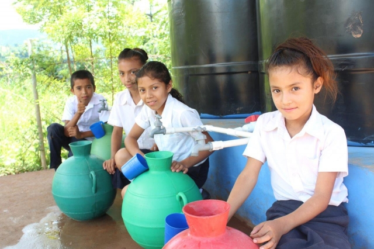

In conclusion, rainwater harvesting is an invaluable and sustainable practice that addresses many of the water-related challenges faced globally. By capturing and utilizing rainwater, we can significantly reduce our dependency on traditional water sources, conserve precious natural resources, and promote environmental stewardship. Despite some challenges, such as initial setup costs, maintenance, and climatic dependence, the benefits of rainwater harvesting—ranging from cost savings and reduced stormwater runoff to enhanced water security and environmental conservation—far outweigh the drawbacks.

Embracing rainwater harvesting not only fosters a self-sufficient and resilient approach to water management but also encourages communities to engage in sustainable practices. With advancements in technology and increased awareness, rainwater harvesting can be effectively implemented in residential, agricultural, industrial, and community settings, paving the way for a more sustainable and water-secure future. Whether it’s for irrigation, potable water, or industrial processes, the potential applications of rainwater harvesting are vast and varied, making it a crucial component of modern water management strategies.
Here are the key points for the conclusion on rainwater harvesting:
•Sustainable Practice: Rainwater harvesting is a crucial component of sustainable water management, promoting conservation and resource efficiency.
•Multiple Benefits: It offers significant environmental, economic, and social benefits, such as reducing stormwater runoff, lowering water bills, and increasing water security.
•Overcoming Challenges: Despite challenges like initial costs, maintenance, and dependency on local climate, the advantages outweigh the drawbacks.
•Versatile Applications: It can be applied in residential, agricultural, industrial, and community settings, providing diverse water solutions.
•Environmental Stewardship: Encourages communities to engage in sustainable practices and reduces the strain on traditional water sources.
•Future Potential: With advancements in technology and increased awareness, rainwater harvesting can play a key role in addressing global water scarcity and fostering a water-secure future.
•Limited Use Cases: While rainwater harvesting is excellent for non-potable uses such as irrigation, toilet flushing, and washing, its use for drinking water requires extensive treatment. Not all systems are designed for potable water use, and the costs and complexity of ensuring safe drinking water can be prohibitive for many users.